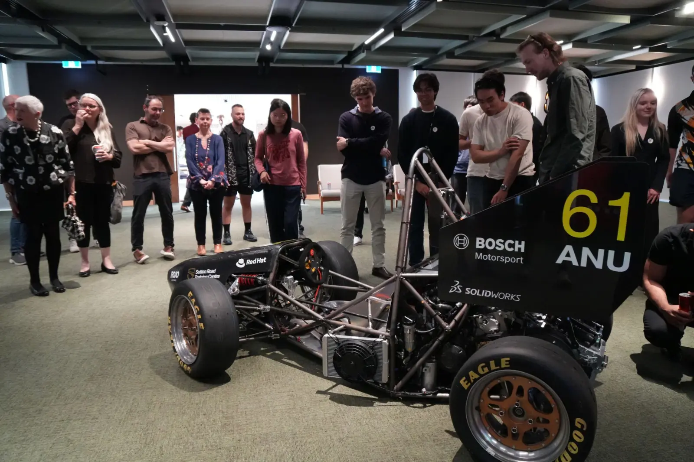
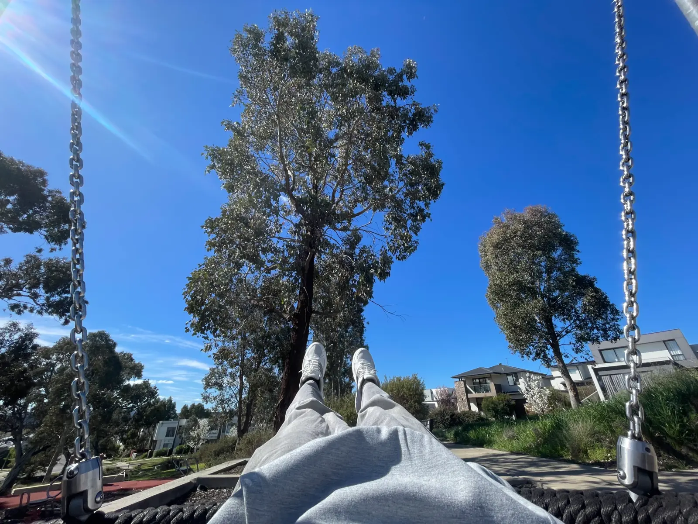
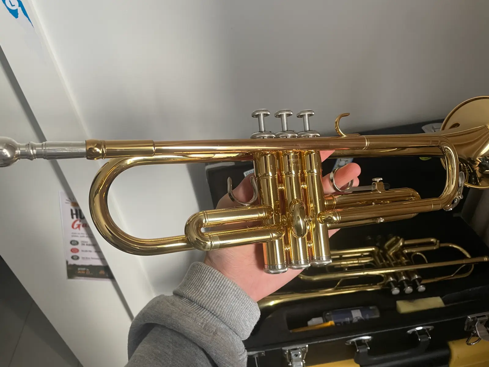
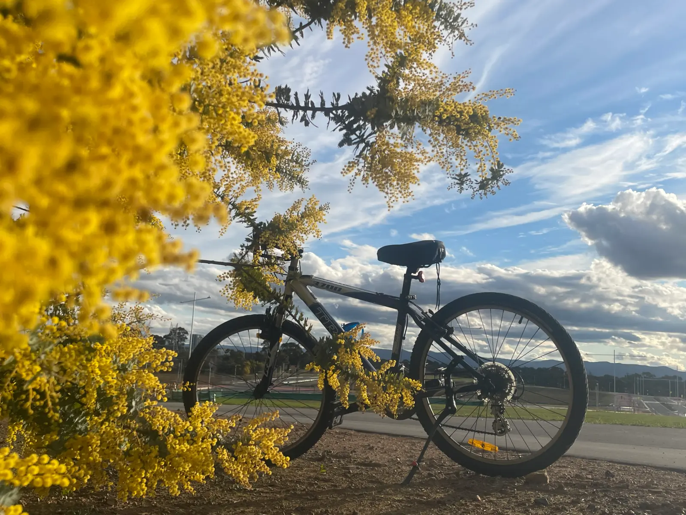
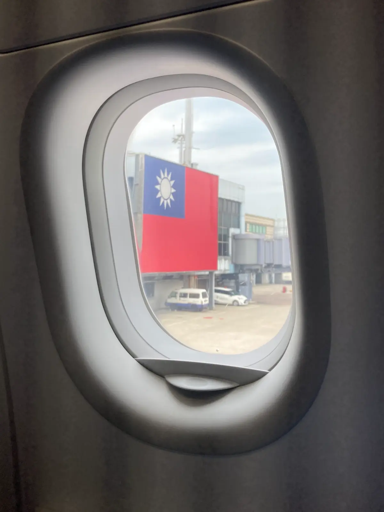
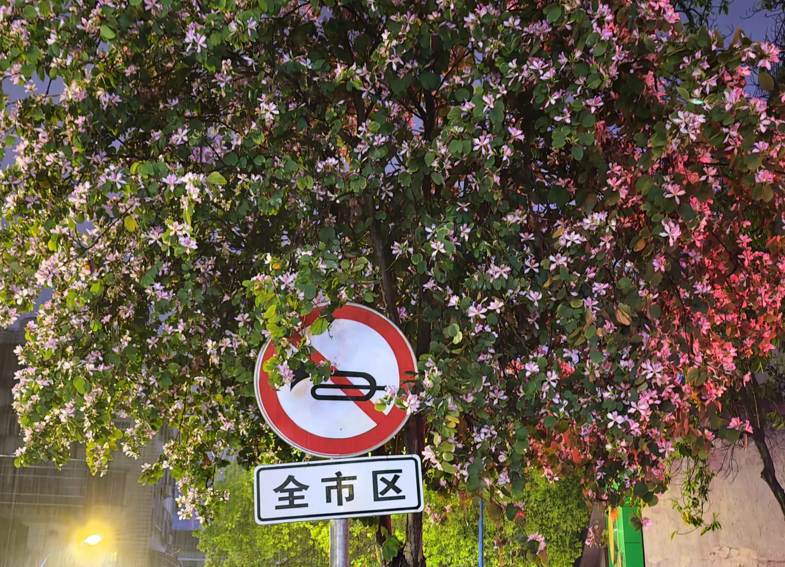
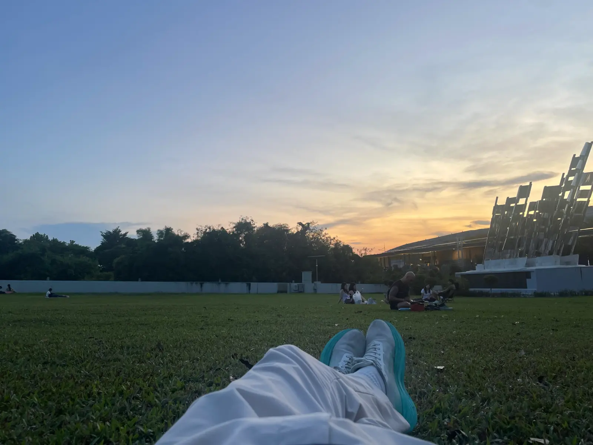
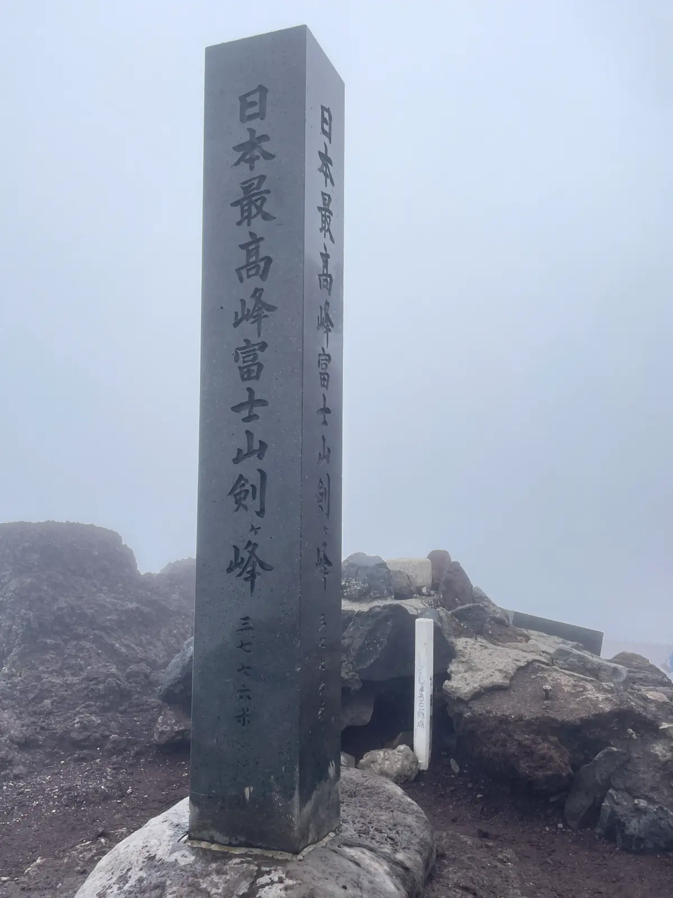
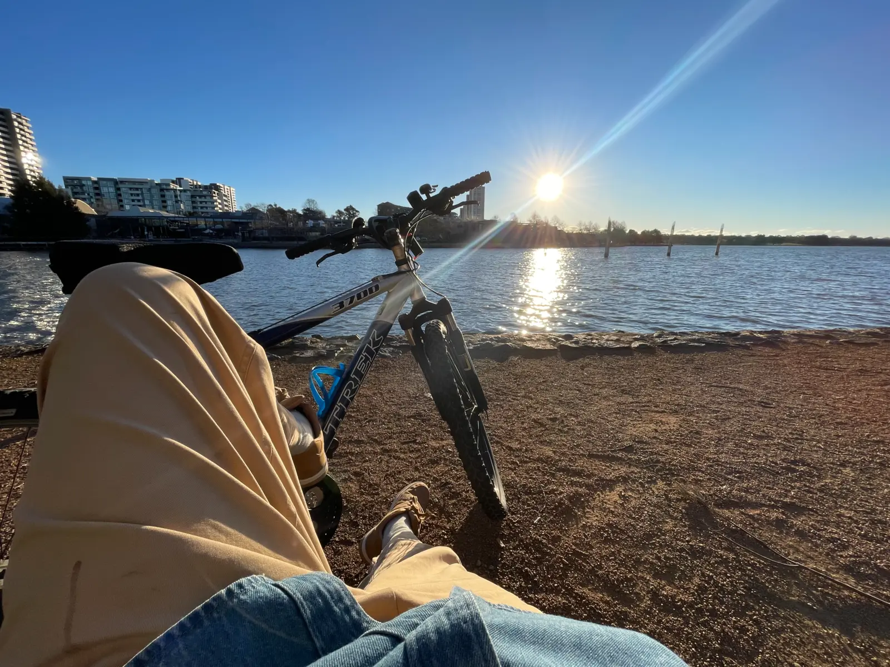
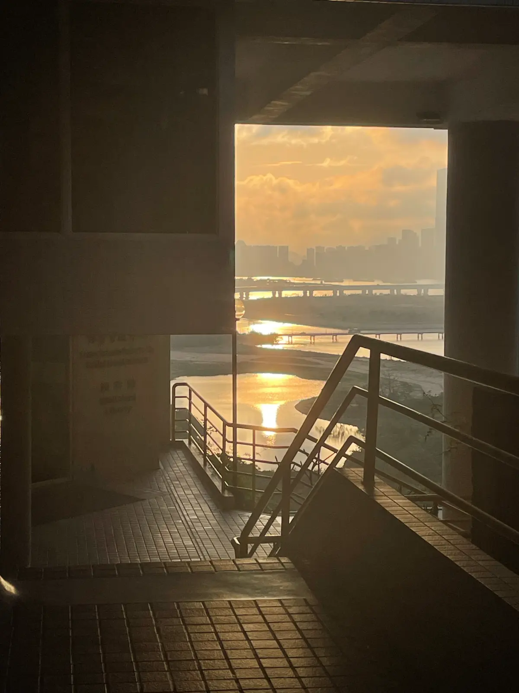

首页 / 04 / 生活
摄影、音乐，以及驱动车辆前行的机械。
01
关注都市、光影与日常生活，正在筹备个人摄影作品集《世界皆舞台》。
02
澳大利亚国立大学管弦乐团小号手。
03
ANUFS 方程式赛车队内燃机动力总成工程师。
个人影集 / 筹备中
用影像，记录我所看见的世界。










1 / 10
FSAE 澳大利亚赛事
正在整理与编排中的个人摄影作品集。精选作品将在编排成形后陆续加入。